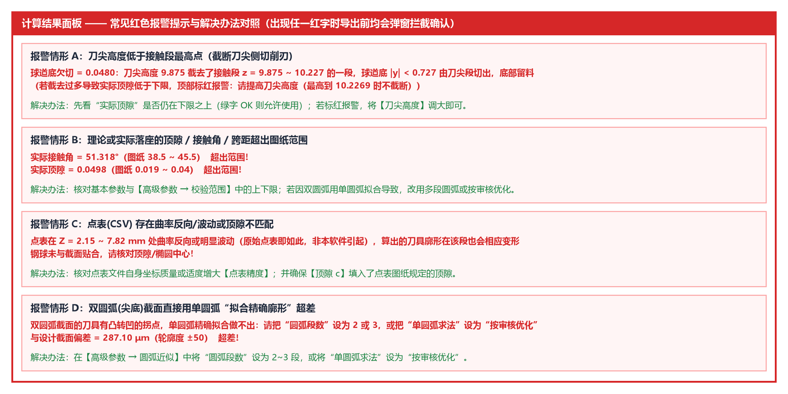

4.1 截面设计、精确廓形与仿真落座
本节逐行解读计算结果面板顶部的 ■ 校验结论 以及前三大分块：■ 一、球道截面设计【理论值】、■ 二、精确刀具廓形【理论值】 与 ■ 三、精确刀具切出的球道【实际值·仿真】。
一、顶部汇总：■ 校验结论（新增！）
每次计算完成后，软件会自动扫描整份报告（含第 一 ~ 五 分块）中所有带红色报警状态（bad）的条目，并在报告最顶部生成 ■ 校验结论：
- 全部合格时：
■ 校验结论 全部校验通过 - 存在超差或异常项时：
■ 校验结论 共 2 项需要注意（下方各小节中同样标红） · 四、圆弧近似刀具：与设计截面偏差 287.10 μm 超差!（轮廓度 ±50） · 四、圆弧近似刀具：实际接触角 51.318° 超出范围!（图纸 38.5 ~ 45.5）
二、■ 一、球道截面设计【理论值】 逐行详解
以默认 AC3300-G 椭圆球道为例，第一分块输出如下：
■ 一、球道截面设计【理论值】
截面：椭圆（给定相似度）
钢球中心轨迹半径 Rp：31.5225
椭圆半轴 a(横向)：10.1762 b(径向) = 10.6436
椭圆中心高 uc：+0.6929（相对钢球中心，朝球道开口为正；距球道底 10.6436）
接触角 α：42.000°（公差 -2/+2°，实际接触角应在 40.000 ~ 44.000）
相似度：1.0400
顶隙：0.0287 OK（图纸 0.019 ~ 0.04）
接触角跨距：13.2782（未给范围，不校验）
球道边缘接触角：67.32°
| 输出行名称 | 含义与核对方法 |
|---|---|
截面 |
当前所选的截面类型与定义方式（如 椭圆（给定相似度）、双圆弧（给定半径 R） 或 点表(CSV) <文件名>）。 |
钢球中心轨迹半径 Rp |
钢球中心绕球道中心 沿球道摆动运动的圆弧轨迹半径（单位 mm）。 |
| 截面特征描述行 | 按截面类型输出几何尺寸： • 椭圆：输出 椭圆半轴 a(横向)、b(径向) 及 椭圆中心高 uc；• 双圆弧：输出 圆弧半径 R、交叉 圆心 (y, u) 坐标及 球道底尖点法线角 θ0；• 点表(CSV)：输出 点表半宽 / 深、光顺偏差、求出的接触角与钢球最小间隙，以及点表曲率质量诊断。 |
接触角 α |
理论截面接触角，并显示由【校验范围】接触角下偏差 / 上偏差 换算出的实际接触角合格区间（如 公差 -2/+2°，实际接触角应在 40.000 ~ 44.000）。 |
相似度 |
球道名义截面（不含余量）在接触点处的曲率半径与钢球半径之比。 |
顶隙 |
钢球最低点与名义球道底之间的理论径向间隙（单位 mm），对照 [顶隙下限, 顶隙上限] 自动判定 OK 或 超出范围!。 |
接触角跨距 |
钢球与左右两侧球道接触点之间的水平跨距（，单位 mm），对照 [接触角跨距下限, 接触角跨距上限] 判定。 |
球道边缘接触角 |
球道槽壁与星形套外球面相交处（球道开口边缘）的截面法线角。 |
三、■ 二、精确刀具廓形【理论值】 逐行详解
■ 二、精确刀具廓形【理论值】
接触段（到球道边缘）r：7.9269 ~ 10.1190（z: -0.0566 ~ 6.0205）
边缘延伸：0.3 mm（在球道边缘 z = -0.0566 之外继续到 z = -0.1747（r 10.1384），为外球面尺寸偏差和定位误差留的余量）
刀头最大直径：20.2768（含边缘延伸）
刀尖高度：9.922
廓形单调(无自交)：OK
过切校验 最小间隙：0.00e+00 OK（< 0 为过切）
| 输出行名称 | 工程含义与制造用途 |
|---|---|
接触段（到球道边缘）r |
真正切出球道（从球道底到外球面球道边缘处）的核心接触段刃口在刀具坐标系（原点=虚拟钢球中心，朝刀尖为正）下的半径范围与轴向范围 z。其中 z 的最大值（如 6.0205）即为接触段最高点。 |
边缘延伸 |
在球道边缘（外球面处）之外朝刀柄方向多算的一小段刃口，为星形套外球面尺寸偏差与机床装夹定位误差留出安全余量。 |
刀头最大直径 / 刀尖高度 |
精确刀具接触段（含边缘延伸）的最大回转外径与当前设定的刀尖平端高度。 |
廓形单调(无自交) |
检查刀具接触段母线沿轴向是否单调变化、无回折自交。 |
过切校验 最小间隙 |
将整段三维球道面网格点与摆动中的刀具逐点比对，确保走刀全程无干涉过切。 |
四、■ 三、精确刀具切出的球道【实际值·仿真】（含钢球实际落座与实际 PCD）
软件驱动精确刀具沿球道摆动做反向包络仿真，求出实际切出的球道截面，并将直径为 的钢球实际放进切出的球道中（实际落座）：
■ 三、精确刀具切出的球道【实际值·仿真】
最大过切：0.00e+00 OK
侧面（钢球接触区）欠切：1.98e-05 OK
球道底欠切：0.0000（顶隙区）
▸ 钢球放进切出的球道（实际落座）
实际顶隙：0.0287 OK（图纸 0.019 ~ 0.04）
实际接触角：42.001° OK（图纸 40 ~ 44）
实际接触角跨距：13.2785（未给范围）
钢球中心移动：+0.0 μm（相对设计位置，朝球道开口为正）
实际 PCD：62.4640 OK（偏差 +0.0 μm；图纸 62.454 ~ 62.474）
1. 反向包络仿真与刀尖截断智能判据
最大过切与侧面（钢球接触区）欠切：正常时均为1e-5 mm以下的离散仿真误差量级，显示绿色OK。球道底欠切的智能分析：- 当
刀尖高度高于接触段最高点时，球道底完全切出； - 当
刀尖高度低于接触段最高点时，软件会自动说明截去范围，并结合下方钢球实际落座后的实际顶隙进行判定：只要实际顶隙仍在图纸顶隙下限之上就完全合格；只有当截去过多导致实际顶隙低于下限时才会标红报警。
- 当
2. ▸ 钢球放进切出的球道（实际落座） 五项实测指标
把刚性钢球沿着对称轴放入仿真切出的球道槽内，直到钢球与两侧槽壁稳稳贴合接触，此时测得的真实装配状态：
实际顶隙：落座后钢球最低点到切出球道底部的真实距离（对照顶隙下限 ~ 顶隙上限校验OK/超出范围!）；实际接触角：落座后钢球与切出球道侧壁接触点的真实法线角（对照接触角 + 下偏差 ~ 接触角 + 上偏差校验）；实际接触角跨距：落座后左右两接触点之间的真实水平距离（对照接触角跨距下限 ~ 接触角跨距上限校验）；钢球中心移动：落座后的钢球球心相对于理论设计球心 的径向偏移量（单位μm，朝球道开口方向抬高为正+，朝球道底沉降为负-）；实际 PCD（新增！）：由钢球落座后的中心移动量换算出的实际钢球分布圆直径（），对照PCD + 下偏差 ~ PCD + 上偏差自动校验OK或超出范围!。
五、常见红色报警汇总与快速处理

- 情形 A（刀尖高度截断切削刃 / 刀尖延伸受限）：若导致实际顶隙不足或刀尖延伸未全部做到而标红报警，展开
▸ 高级参数将刀尖高度调大至提示值即可； - 情形 B（实际落座的顶隙 / 接触角 / 跨距 / 实际 PCD 超出范围）：
- 核对基本参数与【高级参数 → 校验范围】中的公差设置；
- 若出现在第 四 分块且正在使用单圆弧
按审核优化，可将审核优化目标切换为审核范围硬约束或审核范围中值，或改用多段相切圆弧（圆弧段数 = 2~3）；
- 情形 C（双圆弧截面直接用单圆弧“拟合精确廓形”超差或点表曲率异常）：双圆弧截面请选择
2~3段相切圆弧或单圆弧按审核优化；点表截面请核对顶隙 c与点表精度。